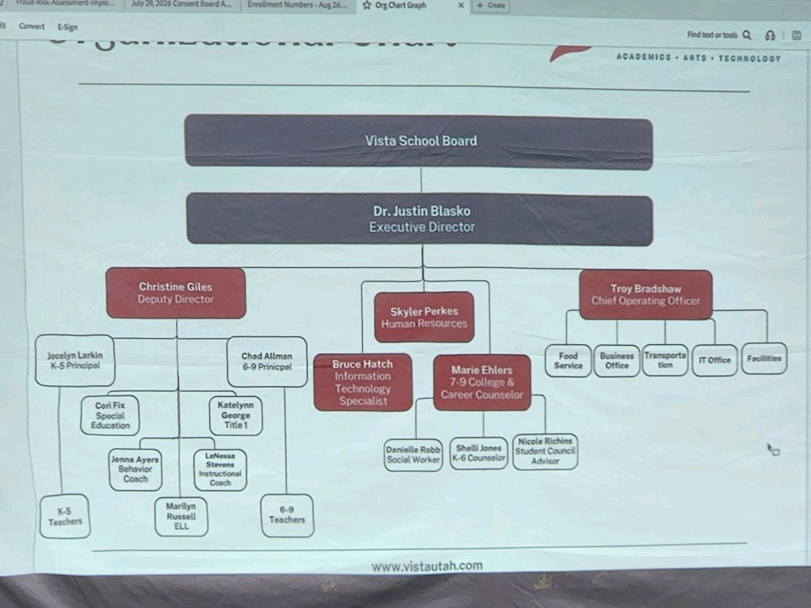
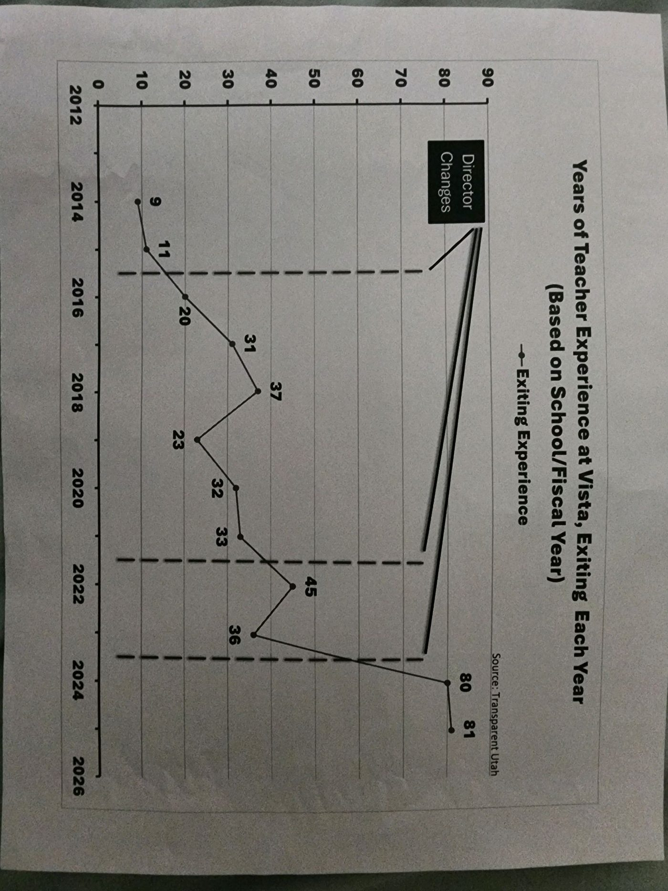
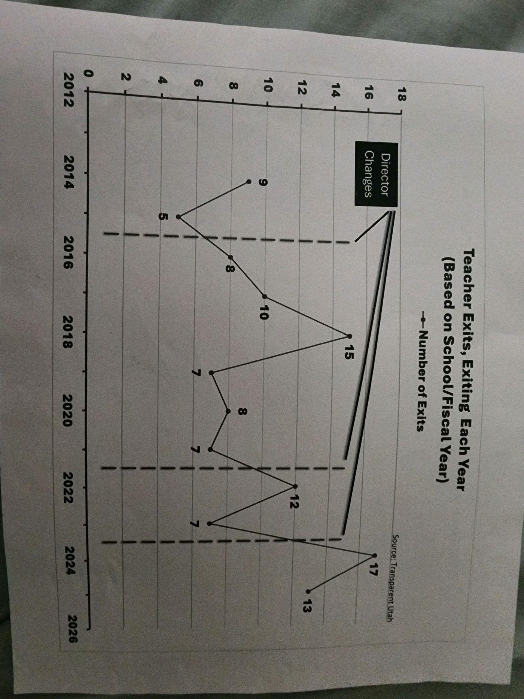
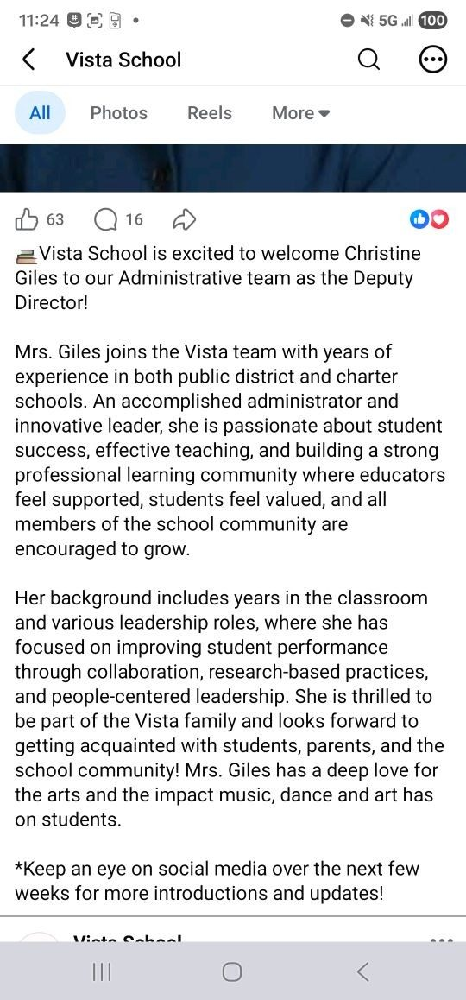
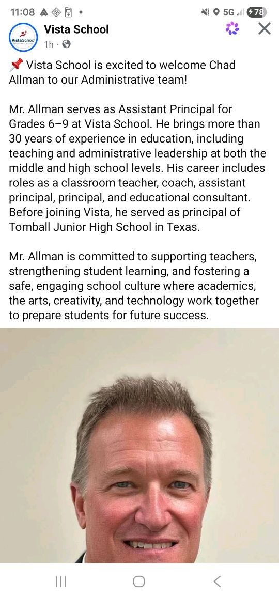
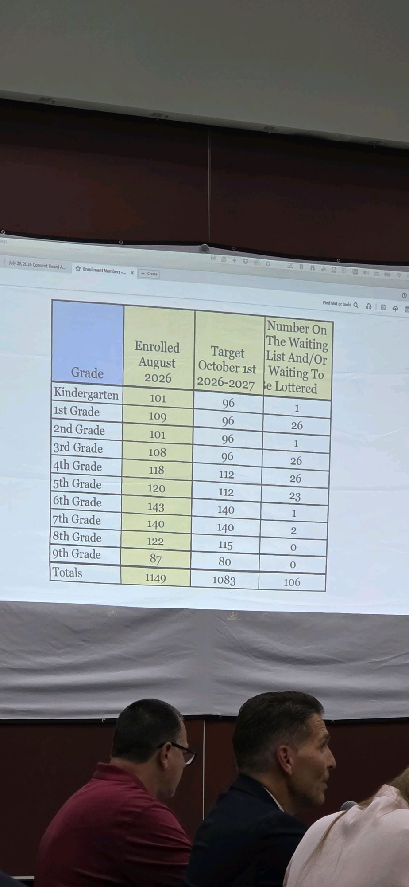

A Closer Look at Vista's Leadership
Vista's current Executive Director, Dr. Justin Blasko, was appointed in August 2023. Before coming to Vista, Blasko was Superintendent of the Monroe School District in Washington State, where he was placed on administrative leave in December 2021 after an independent investigation substantiated complaints of bullying, intimidation, and unprofessional conduct toward staff. He resigned in July 2022 with a severance package of roughly $396,000. St. George News reported at the time Vista hired him that parents raised concerns both about this background and about the Board's lack of communication around the decision.

Vista's organizational chart, as presented at a public Board meeting. Source: vistautah.com.
Administrative & Teacher Turnover
Compiled by Vista parents using Utah's public compensation database, Transparent Utah. The dashed vertical lines mark years in which Vista changed directors. These charts were put together by parents, not produced by Saving Vista School — the underlying data is public and can be checked directly at transparent.utah.gov.

Years of experience held by teachers who left Vista, by year.

Number of teachers exiting Vista, by year.
Recent Administrative Hires
Announcements posted by Vista School's own Facebook page.

Christine Giles introduced as Deputy Director.

Chad Allman introduced as Assistant Principal, grades 6–9.
Enrollment
Presented at Vista's July 29, 2026 Board meeting.

Enrollment by grade, August 2026, compared to the school's own stated targets.
A Parent Request to the Board

A parent's request to the Vista School Board for a third-party salary audit and a published pay scale, with administrator salary figures compared to George Washington Academy.
Sources
- St. George News: "Hindsight is 20/20": Vista School in Ivins welcomes new director amid concerns from parents (Aug. 11, 2023)
- HeraldNet: "'Expletive,' 'idiot': Scathing report paints Monroe schools' supe as bully" (May 27, 2022)
- Seattle Times: Monroe superintendent to resign, receive nearly $400K despite complaints about toxic behavior